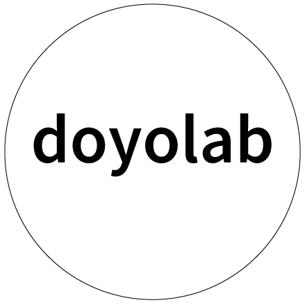

CYKLUS ＆ Harch work1
全体
結果
Q2
「循環型社会」や「サーキュラーエコノミー」について、感じた課題やそれに対する考えを共有してください。
結果
Q3
地域内で衣類循環を実現させるために、どんな要素が必要だと感じましたか？
結果
Q4
地域内での衣類循環に関する「自分ごと」としての問い、または自分自身が関われそうなことについて、教えてください。
結果
Q5
その他、今回のWSで感じたこと、Community Loopsへの質問・意見などを自由に書いてください。
結果